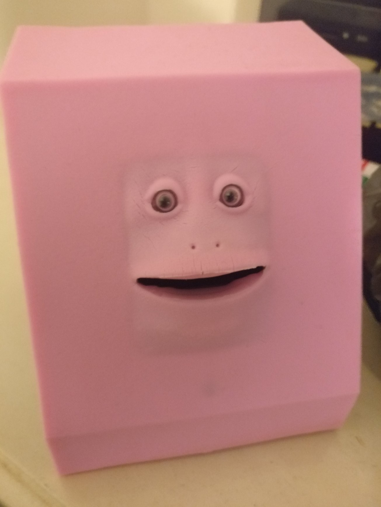

The following entries are an account of my learning experiences while taking Engineering Practice Preparation 1.
This week served as an introduction to the subject,
whilst also introducing us to the concept of workplace learning.
We were also asked to write a few paragraphs on
our understanding of engineering identity:
Engineering identity refers to an engineer or engineering student's perceived role, value, and agency
within the wider scope of their industry. Skill level, knowledge, and prior experience
heavily contribute to one's sense of belonging and identity as an engineer within their community of
practice; this sense in turn is associated with persistence and retention in academic programs and
the deepening of one's commitment to their career (Schell and Hughes, 2017).
The process of "becoming an engineer" is referred to as "legitimate peripheral participation",
which is made up of three primary activities: the mastery of disciplinary knowledge, the navigation of formal and informal pathways
into the profession, and the identification by others and oneself as an engineer. With regards to myself,
my navigation of formal and informal pathways and identification as an engineer is quite limited due to
lack of formal prior experience, and I find it difficult to quantify my mastery of disciplinary knowledge
for similar reasons.
To develop my sense of engineering identity further, I will have to gain more formal experience in my field,
with increased exposure to professional software development environments. My sense of identity will also likely
be furthered by conversing with established practitioners and applying relevant advice.

We were also asked to take a photo that represents what professional engineering practice means to us. I chose this motorised face piggy bank
as it contains many different components that would have each required considerable amounts of thought to put into, despite the bank itself
existing as a children's money saving mechanism at best and a cheap novelty at worst. To accept a coin, it must open its mouth and swallow it; this
is achieved through a spinning motor attached to part of its "skin". To know when a coin is placed near its mouth, it uses an always-on motion sensor.
To power it, it takes two AA batteries. Despite how simple this item seems on the surface, and how easy it is to use, it still would have had to
go through the research, development, and manufacturing stages, as well as any stages in between. Thus, I feel that this item is representative of how
engineers are required to put considerable amounts of thought and effort into things that an ordinary user of the item would see as small and inconsequential,
and how even something as simple to the user as "put coin in mouth" require an understanding of many different components to implement. Engineers have to
think about all the things that the users of a product don't, which is why I feel that this item is representative of
professional engineering practice.
In week 2, we were introduced to the "sandwich" model of providing feedback, where criticisms are wrapped in an
easy to digest shell of multigrain bread, as well as the concepts of human, social, and cultural capital. Having been
born and raised in Australia, the same country I am looking for work in, the amount I will need to invest in cultural
capital will be minimal compared to the amount I will need to invest into human and social capital. Currently, the closest
thing I have to social capital would be my membership to ProgSoc and participation in hackathons and game jams; thus, there
is plenty of room for improvement in this area in the future, but I believe that the skills associated with my human capital
make up for it for the time being and would be significantly more important to a prospective employer. This week, I attended
a meeting with a company in Sydney about a potential internship opportunity, and although I was intoduced to the opportunity
through a neighbour, they were far more interested in technical skills, team skills, and work ethic compared to what people
and organisations I was associated with.
I have found the learning in this subject to be different to subjects relevant to my field; it is far more personal and more
about the development of the various soft skills that can be of use in a professional engineering environment.
This week, we had to fill out a table of SMART (Specific, Measurable, Achievable, Relevant, and Timely) goals.
This week, our peer feedback group completed Professional Assessment Activity 1. In this activity, we provided feedback on each group member's
ePortfolio. The suggestions for my portfolio were to attend an industry event and take a photo, to add more photos in general,
and to add more to my learning journal. Additionally, I was asked to expand on the About Me section of my page, as well as provide a Job Analysis.
I aim to implement these suggestions over the coming weeks in preparation for Professional Assessment Activity 2, as well as for
final submission.
We also were asked to explain what we expect from the administrative, developmental, and supportive elements of supervision. Personally, I expect
supervisors to ensure that we meet the required standards from the company and any associated laws, relating to performance, quality, health, ethics, and safety.
As for my development, I expect supervisors to evaluate my current performance and suggest plans to improve, as well as provide me with a clear plan as to what
level of performance I should strive for. I also expect supervisors to support me when it comes to easing into new practices, frameworks, or hierarchies,
checking in on me every so often to see if I am meeting targets and providing advice or additional support where necessary. Supervisors should make both my
rights and responsibilities clear with regards to the workplace environment and industry.
Surprisingly, these thoughts did not differ between members of my feedback group. We were also asked to provide opinions on whether the following questions should
be asked from a supervisor:
This week, we had to write a critical incident journal entry recounting and analysing an occupational health and safety issue
that we faced or witnessed as a student or in a job that we had. As my engineering field is software, the amount of occupational health and safety
issues I am exposed to on a daily basis is limited, although I can think of one issue in particular related to OHS that occurred during a hackathon.
In December 2017, I participated in the Ludum Dare 40, which gave me only 72 hours to program a functional game. During development,
I failed to adhere to many health and safety recommendations related to working with computers, such as taking frequent breaks and having my seat adjusted
appropriately. The lack of breaks not only harmed my productivity by not being able to have a clear mind to fix bugs, but also took a strain on me physically,
severely impacting my sleep schedule and resulting in wrist, neck, and back pain. Thankfully I had time to rest after the hackathon, but if this had happened
during a more demanding time, or if crunch periods like this became a more regular occurrence, it would have serious impacts on my overall physical and mental
health. Thus, in future hackathons, as well as anything else requiring large amounts of work in small time frames, I decided that it would be best to implement
some project management techniques to allocate my work more effectively, or at the very least use some sort of pomodoro timer. This decision has not only improved
my overall productivity substantially, but has also heavily minimised the effects of burnout. Additionally, by learning how to recognise the signs of burnout when
writing code (e.g. getting stuck in thought loops, dry eyes, neglecting food and water, reduced code quality) I have been able to pace myself more appropriately
when working on a task. When working under similar circumstances as a group, I also ensure that breaks are made a mandatory part of the development process for
all team members, and that no team members are pressured into completing work at a rate that would induce burnout.